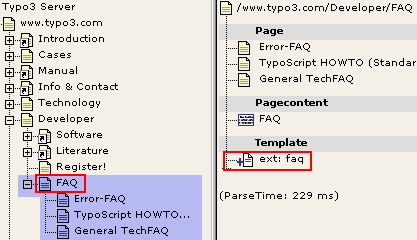
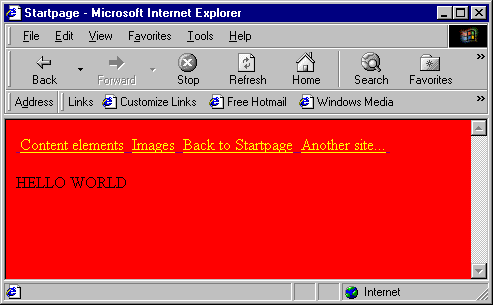
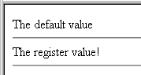
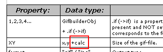
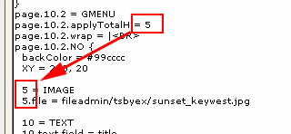
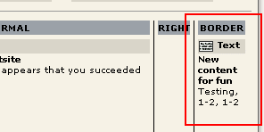
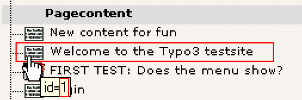

Revised spring 2001
Extension Key: doc_core_tsbyex
Copyright 2000-2002,
This document is published under the Open Content License
available from http://www.opencontent.org/opl.shtml
The content of this document is related to TYPO3
- a GNU/GPL CMS/Framework available from www.typo3.com
TypoScript By Example 1
Introduction 2
This document 2
Other documentation 2
Do I need it? 2
What is a TypoScript template? 2
Overview 2
Case: "Include basis template" 4
Managing the hierarchy of templates 5
Case: "Extension" 6
Managing extensions 6
Read more 7
Standard templates 7
Introduction 7
static_template table 7
Content rendering details 8
Typical setup of a standard template 8
Basic Tutorial: Start a new website 9
A simple website from the ground 9
A website with a little menu 11
Inserting the graphical menu. 12
Content on the site 12
Concepts 14
&id and &type 14
Wraps 16
Arrays (1,2,3,4...) 17
Numerical arrays 17
String arrays 17
styles.content.[xxx] 18
Example from "content (default)" 18
Educational sections 21
Introduction 21
Code notation conventions: 21
stdWrap 23
The concept, stdWrap 23
stdWrap properties 24
Get data 24
Override / Conditions 26
Content Objects (cObject) 28
Introduction 28
COA 28
FILE 29
IMAGE 29
IMG_RESOURCE 30
CLEARGIF 30
HRULER 30
CTABLE and OTABLE 31
TEMPLATE 34
FORM 37
CASE 39
LOAD_REGISTER 41
imgResource and GIFBUILDER 43
Introduction 43
A regular file as input 43
Bitmap masks 44
Import an image 45
GIFBUILDER 48
GIFBUILDER basics 50
+calc 50
.niceText 51
The GIFBUILDER TEXT object 52
The IMAGE object 52
Navigation 54
HMENU 54
TMENU 54
IMGMENU 56
optionSplit 58
GMENU 58
Images on GMENUs 59
GMENU_LAYER 61
Extending a background image to the whole menu 62
PHP include-scripts 65
PHP_SCRIPT cObject 65
Inspiration 65
Example: Userdefined tags 65
Content rendering 69
Introduction 69
CONTENT 70
colPos 71
styles.content (default) 73
lib.stdheader 74
RECORD 75
Challenge answers 78
This document is an introduction to using TypoScript. It tries to get your thoughts aligned with the way TypoScript works. A lot of small examples are used to help you grasp TypoScript little by little preparing you for bigger adventures.
A very important document is the TypoScript reference (TSref), which contains all details on TypoScript. The problem with the reference is that very few examples follow it. So therefore this is a more reader-friendly way to approach TypoScript.
Tutorials
There's a series of tutorials that are very good to follow also.
Content rendering
A separate PDF-document, content_rendering.pdf, with topic on content rendering is available.
Yes. If you are working in the layers above F1 in the Typo3 Overview. But it's certainly up to you how much you want to utilize it. If you find TypoScript very confusing, you'll do fine with a very few options and then render the content with your own PHP-scripts. You can also base your project on a standard template which is a fixed layout but extremely easy to configure for different options.
Normally a "template" is a HTML-file that describes a layout and certain areas that should be substituted with some other content. In Typo3 you can use this approach, even with TypoScript. See the tutorials for more information.
But a "template" or "template record" as refered to in these documents is a record from the database table "sys_template" in Typo3 and the existence of such a record on a certain page defines how the page displays. Thats a template.
In order to understand templates, you should read this introduction to TypoScript. You'll also find thorough information in the TSref.
This page is an overview of the fields of the template-table:
"Template title": The title of the template. This is shown in the recordlist on the web-tab. Choose whatever you like.
"Website title": This is the title of the entire website. This is shown in the HTML-title before the page-titles. Look at this website (typo3): In the titlebar of the browserwindow "Typo3:" is prepended the title of the specific page.
"Constants": The "Constants-field". This is where you put constants that is substituted in the setup-field. Eg. a constant "styles.content.textStyle.size" is inserted in the setup-field as "{$styles.content.textStyle.size}". Constants are substituted in the order they are introduced in this field. It is important to understand that constants are not used as programming variables. They only substitute constants items in Setup. Note that the Constants-field is "summed-up" (concatenated) with previous templates in the rootline and constants-fields from included templates (see below "Clear" (6)).
"Setup": This field contains the TypoScript setup-code. Use constants from the "Constants-field" (3) to insert easily changable properties or global values. Note that the Setup-field is "summed-up" (concatenated) with previous templates in the rootline and Setup-fields from included templates (see below "Clear" (6)).
"Resources": This field may contain media like images, masks, truetype-fonts, stylesheets, html- and text-documents. These can be referenced from within TypoScript (Datatype "resource") and are copied with templates.
When you create a reference to a "resource" do like this: "image*.gif" instead of this: "image.gif". If you use the asterisk, you prepare your template for duplication as "image*.gif" will also match a filename like "image_01.gif" which will be produced when a template is duplicated.
"Clear" and "Rootlevel": "Clear" lets you clear the Constants and/or Setup code of template from earlier in the rootline. For a deeper explanation of this, refer to the TSref.
"Rootlevel" defines, that this point in the page-structure should act as the root (the startpage) of a new website.
"Include static": This lets you include the static templates that comes with Typo3 by default. The order (from top) is the order by which, the templates are included. Static templates are included before the template in the field "Include basis template" (8).
"Include basis template": Here you can include other templates, which you have made yourself. See the case below.
"Template on next level": Here you can include a template that will be included for pages on the next level in the tree-structure!
"Description": Enter your own notes here.
A nice way to use templates is to create libraries of TypoScript code in a template and then include that template in another template an reuse the TypoScript code. This is the point of static templates.
But static templates cannot be edited. They are distributed with Typo3 and are not subject to change. Only subject to "expand" (new static templates will be written by time). Therefore you have the ability of including templates in templates.
In this example I'll show you how I made the www.typo3.com and www.typo3.dk websites. They are very much alike. Therefore I have created a common template to control the design. But I have also made individual "extensions" with respect to the danish and english language.
In order to share a template between two or more sites, the sites must reside in the same database. This is the case of the Typo3 website in the two languages. The advantages of this is very obvious: All graphics, pages and layout are easy to copy around and maintain when they are accessible from the same Typo3-interface.
Look at the first picture below (click it for a separate window). In the "rootpage" of both the ".com" and ".dk" site there's a template (with "Rootlevel" clicked). Each template includes the main template, which is found in the "Skabeloner"-folder (means "templates" in danish...). The main template controls almost the entire layout of the sites. And each site share this template!!
Now look at the second and third picture below. These are parts of the content in each of the ".com" and ".dk" templates. Here you see some values being overridden. For each site the content of the meta-tags "keywords" and "description" is different. The proper constants are therefore overridden in order to change this. You will also notice that the danish template changes a few other parameters.
This is very interesting. Local changes are possible in one branch of the website while the global layout may still be changed from the main template. This is pretty much how you can utilize the standard templates. They have a set of constants, you may alter in order to customize you site.
You can easyly monitor which templates are included for your site by the Template Analyzer function in the web_ts module:
This shows not only which templates and static_template are included but also in which order (read "from top") they are processed and if any of the templates has switches set like "Clear constants" and "Clear setup".
The above examples indirectly showed the strength of extensions; The site-specific changes was extensions (overridden TypoScript or constants) of the main template.
Here I'll show you how the FAQ-pages in the developer-section of this website is created:
First of all I use another kind of header for the FAQ-section. This headertype has a grey box around and you may choose this header for content-items whereever on the site ("Layout 2"). But the default header type is "Layout 1". So for the FAQ-section (the "blueish" pages on the first picture below) I made an extension, that the default header type should be "2" and not "1" for all pages in this section - which means "all pages from FAQ and outwards".
The task is done by creating a new template on the "FAQ"-page. In this template the "Clear"-fields and "Rootline" must not be checked. If they are, the whole website will "start over" from that point instead of being an extension to the original template!
The content of the template is shown on the second picture. As you see the default header type is set to "2" and the default bodytext size is set to "1" (normally "2").
Of course I could change the font-size and header-type for each content-item... but frankly, that's a quite boring way to do it, if you can fix it like this...
Check the FAQ-section and see for yourself! It works. No hassle.

Again the Template Analyzer comes in handy here:
In the TSref there's also an explanation of how templates work.
Typo3 offers an easy way to create websites and get started with TypoScript. A bunch of standard templates is bundled with Typo3.
Most websites based on Typo3 rely on TypoScript templates. In order to understand templates, you should read this introduction to TypoScript. You'll also find thorough information in the TSref.
If you want to test some of the standard-templates and study live examples, please refer to the demosite at demo.typo3.com.
The static templates are records from the table "static_template". The records are root-level records, which means they are always found in the root of the pagetree and can only be viewed by administrators. The table is also "read only" (setup in tables.php). This is because "static_template" contains records which are not meant to be changed by anyone. They act as preset chunks of TypoScript code. The table "static_template" is distributed in new versions (with added records) with every Typo3-version.
Below you see the content of the static template as it was in september 2000. This may have changed for the current version of Typo3. But it's useful for explain how it works:
"template: ...": This is the standard templates. When you want to create a website based on a standard-template you add this to the top of the list of included static-templates in your template.
All standard templates includes the "content (default)" template for content-rendering.
"content (default)": This template contains a cObject "tt_content" which is used to render the content-items of a page. Included by all templates so far. Some of the more exotic types (CType) of content-items are not rendered though. "styles.content (default)" is included in this template.
"styles.content (default)": This contains a lot of predefined TS-objects for use with eg. content-rendering, "powered-by"-logos, content-inserting and so on. The objects are widely use by "content (default)" and many properties are adjustable as constants for easy change of behavior.
"cSet (default)": This is kind of extension to the "styles.content (default)" template. The point is to substitute eg. target-definitions in many objects of the "styles.content (default)"-template with a common constant, which makes it much more convenient to adjust the target through all objects. It also takes care of such as background colors, font-faces/colors. It's a layer on top. Very useful for fast creation of websites based on the standard-templates; Include the standard template. Include "cSet (default)". Override some parameters of "cSet. ....". See how it's used in the templates on the demo-site.
"frameset...": Different standard framesets. Used by some standard templates.
"styles...": Some standard objects like menus, sitemaps, headers and so on. This section may grow with lots of interesting presets like boards, catalogues, calender-systems and so on.
Read the PDF-document content_rendering.pdf or refer to
http://www.typo3.com/Content-rendering_an.1102.0.html
This is the hierarchy of a fictive website based on the standard tempalte BUG:
In the Template Analyzer it looks like this:
Here follows some more examples of TypoScript:
If you want to start up a website from the ground, you must create a template on the first page of the website. This page may be refered to as "the root of the website" or more commonly the frontpage. The frontpage is not automatically the very first page in the Typo3 pagetree but can be any page in the tree, you want to act as a startingpoint of a website!
The initial template must have the checkboxes "Clear constants and setup" and "Rootlevel" checked. In order to understand this, you must know that templates are read from the root of the pagetree and outwards. This is called the "rootline":

In the picture to the right, the rootline from the page “Experienced we....” (3) goes all the way down to the page “www.typo3.com” (zero). This is because there is a template record on page “www.typo3.com” with the rootlevel flag set (see below). To the left you see how the rootline is represented in a PHP-array internally.
If you meet an expression like “Is page 730 in the rootline?” then the answer is yes in this case, because the page with id 730 (“Introduction”) happens to be the second page in the rootline (at index 1). Please see TSref for more info.
"Rootlevel" defines that the template signifies a start of a new website from the page the template lies on. If you do not set this checkbox, the template acts as an extension to any template in the rootline before it.
"Clear constants" defines that any constants from previous templates in the rootline are cleared before this template is loaded.
"Clear setup" defines that any TypoScript code from previous templates in the rootline are cleared before this template is loaded.
If you try to look at the page at this point, an errormessage appears.
You must write some TypoScript in the fields "Constants" and "Setup". Normally you include some of the static templates to start, but for this example we make a little template from scratch. Write the following in the field "Constants":
bgCol = red
You have now defined a so called constant - "bgCol" - to the value "red". We'll insert this constant in the "setup"-field.
Write the following in the field "Setup":
page = PAGE
page.typeNum = 0
page.bodyTag = <BODY bgColor="{$bgCol}">
page.10 = HTML
page.10.value = Hello World
page.10.value.case = upper
This looks like this in the webbrowser:
This example shows a number of things about TypoScript. Lets start with the first two lines. Here "page" is defined to be a PAGE-object. A required property for a PAGE-object is the value typeNum, which is especially used, when a website uses frames (in that case typeNum would identify the various frames). If typeNum is zero then it just corresponds to a page refered to without the type-value, eg. "?id=51". That's the case for websites without frames.
Another property of a PAGE-object is "bodyTag". Here you enter the body-tag of the page. Please note that the background-color is red because we have inserted the constant from the "Constants"-field.
At last a Content-object of the kind "HTML" is defined. The value is set to "Hello World". This is sent off to the website. But you'll see, that it's shown in upper case as the value and any properties is parsed through the "stdWrap"-function. A property for "stdWrap" is "case" which can be either "upper" or "lower". Take a wild guess what "lower" does...
Now we'll add a little menu to the website. This menu must be located above the text "Hello World". Now add this in the bottom of the "Setup"-field:
page.5 = HMENU
page.5.1 = TMENU
page.5.1.wrap = | <BR><BR>
page.5.1.NO {
linkWrap = <font color=yellow> | </font>
ATagBeforeWrap = 1
}
Here you define a new content-object at position 5 in "page"'s content-array. The object-type is HMENU. HMENU has a numerical array of menu-objects. Here we use "TMENU" as menu-object on the first level. This gives us a textbased menu. For the TMENU-object we set the property "wrap". As you might remember "a wrap" means that it'll be split up by the character "|" and the first two parts will be placed around "something". In this case (page.5.1.wrap = | <BR><BR>) the whole menu is wrapped so that two new lines appear after the menu.
Then some properties is defined for ".NO" under TMENU. ".NO" denotes the setup of menu-items in "normal"-condition. Other conditions could be "ACT" (Active), which means when a menu-item is somewhere in the "path" you're at on the website. For instance you could change the color of the item to white if you want to indicate it visually on the menu-item that a surfer has entered a certain section on the site.
Under ".NO" you define that every menu-item is wrapped in a font-tag making the link yellow. "ATagBeforeWrap" is an option that tells you that the link-tag (<A>) must be wrapped around the menu-item before the font-tag (or else the yellow color will be overridden by the normal tag-color).

Instead of the textual menu you just defined, you could insert the graphical menu from the Typo3 website. This would be done by this instead of the previous code:
page.5 < temp.topmenu
Now you would like to add content to the website. In the standard TypoScript solution the main content-table is "tt_content". So you add a new content-object of the type CONTENT. You set the property "table" to tt_content.
To configure the sql-select statement you define the property "pidInList" of the "select"-object. When you set it to "this" the pid of the content-records MUST match the id of the current page! "orderBy" is set to "sorting" which is the column in the table tt_content which decides the sorting of the elements.
page.10 = CONTENT
page.10 {
table = tt_content
select {
pidInList = this
orderBy = sorting
}
}
In order for this to work, you must define how each content-record is layouted. As default this is defined by the root-object "tt_content".
Here is a short example of TypoScript which would generate the content for the CTypes "header" and "text":
tt_content = CASE
tt_content.key.field = CType
tt_content.header {
1 = TEXT
1.field = header
1.wrap = {$cHeaderWrap}
1.space = 3 | 2
}
tt_content.text < tt_content.header
tt_content.text {
3 = TEXT
3.field = bodytext
3.fontTag = {$cBodyTextWrap}
3.br = 1
3.space = | 10
3.parseFunc {
makelinks = 1
makelinks.http.keep = path
makelinks.http.wrap = <B>|</B>
makelinks.mailto.keep = path
makelinks.mailto.wrap = <FONT color="blue">|</FONT>
makelinks.mailto.ATagBeforeWrap = 1
}
}
There are two constants in this case, cBodyTextWrap and cHeaderWrap. These would be defined in the Constants-field in the template and could be value like this:
cHeaderWrap = <FONT face="Verdana" size="3" color="#333333"><B>|</B></FONT> cBodyTextWrap = <FONT face="verdana" size="2"> | </FONT><BR>
Now, this would give us a size-3 Verdana header in gray and bold. The bodytext would be formatted also with verdana but size 2 and with a <BR>-tag after a section.
id refers to the "page-number" in Typo3, the "uid" field of the pages-table. Indicates which page to show.
type indicates for a page, which "part" of the page to show. This is primarily used when you make framebased sites. You could use it for other things also. I'll not explain frameset here, but direct you to Tutorial 3, "Frames with Typo3". But I will give you a hint on how the "type" parameter of the URL is used:
Consider the testsite:
id=10 ("index.php?10") brings up this page. "type" is not defined, but is by default zero, so this is the same:
Try to change the value of type
&type=1
&type=2
&type=3
As you can see a type-value of 3 results in a non-configured page. Makes sense, because looking at the TypoScript in the template, we realize that "typeNum=3" is not defined.
But how does the template look anyway. Peeking in the Template Analyzer:
As you see the template includes a lot of static_template records and the first of them seems to be a static_template with a frameset in.
Taking a look at this static_template, we see this:

3 page-objects are defined, "page", "left" and "frameset". Each PAGE-object defines how the output will look based on the "&type"-value.
A wrap is a very important concept in many TypoScript objects. A "wrap" is a text string, which is explode (split in parts) by "|" (the vertical line, ALT+0124).
So this is a wrap:
<B> | </B>
And if the string "World" is being wrapped by the wrap, the result is this:
<B>WORLD</B>
Notice that even though there are spaces between the wrap-parts and the divider ("|"), each wrap part is trimmed (trimming is to remove "whitespace" before and after something. "Whitespace" is space, tab and linebreak characters)
As you might have realized this is very, very useful because HTML is all about wrapping things into HTML-tags. And in this way, it's very easy to control and cope with.
(BTW: Wrap is listed as a Data type in the TSref)
Sometimes you see properties listed as "1,2,3,4..." or "Array...". Another case is the datatype set to "array of strings".
It's neccessary to understand that TypoScript is not a language like javascript. TypoScript is more a list of definitions. The order of the definitions is set by the array numbers. In fact TypoScript is stored in a PHP array. But it's not true that you only store definitions with TypoScript. Because some 'definitions' call real PHP functions (like stdWrap). They can manipulate or even get data for output. That's why TypoScript is much more flexible and powerfull than simple HTML templates.
A good example of properties being a numerical array is the PAGE-object. The point of the pageobject is that it should return some content. In order for it to do so, you must attach some content objects (cObject) to it (see later). A simple cObject is "HTML" or "TEXT". They do the same (but not in the same way).
page = PAGE page.typeNum=0 page.10 = TEXT page.10.value = Hello world
This (defines a PAGE-object and) outputs the text "hello world" to the browser. The position "10" could have been 934290873 or any integer number. But why "10" then. For me it's tradition, but the point comes now, because if you would like to add some more content to the page, how do you do that? Well, you just add another cObject to the array!
page = PAGE page.typeNum=0 page.10 = TEXT page.10.value = Hello world page.20 = TEXT page.20.value = <BR>Are you listening?
Now why use "20"? Well, use whatever number greater than 10. But leave some "room" for new cObjects between 10 and 20. You never know...
An important thing to understand is that the numerical arrays are always sorted. Non-numerical arrays never have any order attached to them, but numerical arrays have. The consequence of numerical arrays being sorted by their number is that:
page = PAGE page.typeNum=0 page.10 = TEXT page.10.value = Hello world page.5 = TEXT page.5.value = <BR>Are you listening?
... the line "<BR>Are you listening?" is now output before "Hello world" although they are defined in reversed order.
Normally you'll see TypoScript which is nicely coded in the numerical order, but that's just a good habit of the programmer as it's more readable that way.
Whenever a string-array is defined (like the META object in TypoScript) it's because the keys (elements in the array) are unique and means something. The example with META is good. If you want to put META-tags "description" and "keywords" on your page, do this:
page = PAGE page.typeNum=0 page.meta.REFRESH = 60; index.php?id=34 page.meta.DESCRIPTION = This is the description of the content in this document page.meta.KEYWORDS = key, words, ...
This results in this HTML-code in the header of the site (which is very, very blank, if you try this in real life...)
<meta http-equiv="REFRESH" content="60; index.php?id=34"> <meta name="DESCRIPTION" content="This is the description of the content in this document"> <meta name="KEYWORDS" content="key, words, ...">
If you study the static_template, especially "content (default)", you'll see an extensive use of objects from "styles.content.[xxx]".
First of all you must understand, that the toplevels object named "temp" and "styles" are totally unset after a template has been parsed and "compiled" (by serialize()) for storage in the template-cache (cache_hash). The reason why is, that sometimes it's very useful to reuse an object many places in a TypoScript. Creating the object somewhere inside styles. or temp. has the advantage that the objects can be copied from there in your scripts but are finally wiped out to save some space in the cached template.
You should use "temp." for your own common objects. "styles." is reserved for use by the static_templates to provide common used objects.
# CType: image
tt_content.image = COA
tt_content.image {
10 = < lib.stdheader
20 < styles.content.imgtext
}
In this example a object from the static_template "styles.content (default)" is copied to the position "tt_content.image.20". That looks like this in the object browser:
Looking in the static_template "styles.content (default)" we see that the object "styles.content.imgtext" is defined like this:
# imgtext
styles.content.imgtext = IMGTEXT
styles.content.imgtext {
imgList.field = image
textPos.field = imageorient
imgPath = uploads/pics/
imgObjNum = 1
1 {
file.import.current = 1
file.width.field = imagewidth
params = align="top"
imageLinkWrap = 1
....
}
maxW = {$styles.content.imgtext.maxW}
maxW.override.data = register:maxImageWidth
....
}
Now, if I want to change the value of "styles.content.imgtext.maxW" to "400", then I have two options. But a very common error here is to try this:
styles.content.imgtext.maxW = 400
See, this will not help you anywhere. The reason is that this changes the value in the object "styles.content.imgtext" and not in " tt_content.image.20" where it's ultimately used in this case. So you can do one of the following.
1) Because "styles.content.imgtext" is copied to "tt_content.image.20" by the "<" operator of TypoScript, any properties of "styles.content.imgtext" are now in "tt_content.image.20" also. Therefore you can change the value this way:
tt_content.image.20.maxW = 400
This is kind of obvious according to the nodetree of the object browser, isn't it?
2) If you change the value of "styles.content.imgtext.maxW" directly, you must also re-copy it to the proper position of it's use:
styles.content.imgtext.maxW = 400 tt_content.image.20 < styles.content.imgtext
This works also, but be aware that this clears any previous changes made to "tt_content.image.20" (in the manner of method 1 in this example)
I recommend method 1.
Anyway you must be aware that the fine advantage of "styles.content.[xxx]" objects is that they provide default properties that may be used throughout your template. So changing "styles.content.[xxx]" and recopying it one place doesn't bring the change to the other objects that has been based on "styles.content.[xxx]".
For an example, consider " tt_content.textpic.20" which also uses "styles.content.imgtext":
tt_content.textpic = COA
tt_content.textpic {
10 = COA
10.if.value = 25
10.if.isLessThan.field = imageorient
10.10 = < lib.stdheader
20 < styles.content.imgtext
20.text.10 = COA
20.text.10 {
if.value = 24
if.isGreaterThan.field = imageorient
10 = < lib.stdheader
}
20.text.20 = < tt_content.text.20
}
So in order to change the value here also you must add this line:
tt_content.textpic.20.maxW = 400
Now, could you right away do this?
styles.content.imgtext.maxW = 400 tt_content.image.20 < styles.content.imgtext tt_content.textpic.20 < styles.content.imgtext
The answer is "no" in this case, because if you take a look at the TypoScript for tt_content.textpic, the properties of styles.content.imgtext is altered after the object is copied:
...
20 < styles.content.imgtext
20.text.10 = COA
20.text.10 {
if.value = 24
if.isGreaterThan.field = imageorient
10 = < lib.stdheader
}
20.text.20 = < tt_content.text.20
...
This situation is generally solved by using the widely implemented constants, and in this specific case you have the opportunity of changing the constant "styles.content.imgtext.maxW".
From this point you are encouraged to follow the examples using the testsite supplied with Typo3.
All the time, refer to TSref so you can get acquainted with it. It will be your bible when you're working with Typo3. When you're not working with Typo3, I can recommend the true God's Word instead. Much better in real life.
Use the standard testsite with a fresh template in the root of the "Startpage" branch.
page = PAGE page.typeNum=0 page.10 = TEXT page.10.value = Hello world
page.10 = TEXT page.10.value = Hello world
page.10 = TEXT page.10.value = Hello world page.10.case = upper
could also be stated:
... page.10.case = upper
(Pronounced "Standard wrap")
stdWrap is a wizard in many cases. It's the grown-up wrapping-concept.
To give a very educating example, I'll introduce you to the TEXT and HTML content objects (cObjects). Refering to the TSref:
The "TEXT" cObject seems to have a .value property. Datatype is "value" which - according to the list of datatypes - is something, you decide on your own. (Had the datatype been "HTML-color", then you had to specify an HTML-color as value, like "red" or "#FF0000").
The "HTML" object also has a .value property. This is defined to be "HTML" - which practically is the same as the TEXT-object. It's just a string-value.
The difference of the two cObjects seems to be the way stdWrap is implemented. But first take a look at the description of the stdWrap object in the TSref.
This is some of the properties of stdWrap. Basically the stdWrap-object (also called "function" sometimes) does (primarily at least) is processing content in some way. One property which has an immediate noticeable function is the .case property of the stdWrap object. "case" is not listed in this example image, but look it up yourself in the TSref (it's about time you open that "book")
The .case property is able to convert the case of the input. Now, according to the TEXT and HTML cObject description, this is how it works:
The stdWrap properties are on the TEXT-object itself. This means that
page = PAGE page.typeNum=0 page.10 = TEXT page.10.value = Hello world page.10.case = upper
... outputs "HELLO WORLD"
The stdWrap properties are on the .value property of the HTML-object. This means that
page = PAGE page.typeNum=0 page.10 = HTML page.10.value = Hello world page.10.value.case = upper
... outputs "HELLO WORLD"
(Comment: The stdWrap properties are a bit inconsistently implemented on the TEXT-object because the .value property is "mixed" with the stdWrap properties. Luckily the "value" property is not defined for the stdWrap object so in real life it doesn't matter. But anyway, it's 'bad' design - maybe even confusing - of the cObject "TEXT". This situation is also the case of a few other objects like CARRAY)
While you're here...
Try to view the source of the page you just created. Notice that Typo3 by default defines an HTML header and bodysection for you! By setting properties for the PAGE-object you can modify the content of these section though. Even disable them.
General implementation
stdWrap is very powerful and sort of compensates for the fact that TypoScript really cannot be programmed to do any control structures (except from the "conditions") because you can make stdWrap compare values and based on the result choose to return another value and so on. But generally that's taking it too far.
Normally you'll see stdWrap-properties implemented like you've seen for the .value property of the HTML cObject. Example you acn refer to in the TSref is such as .... well nearly half the property-values you can define including many of the properties for stdWrap itself!'
As we've seen above stdWrap is a concept that operates - based on it's proerties - on a certain value. But there is another important task of stdWrap which may be even more popular (or necessary). That is to fetch external content, for instance the title of the page, the current date, a cObject, number of rows from a select-statement, a filelist from a directory or a global variable.
Actually stdWrap is a concept divided into three parts.
Get data
Override / Conditions
Parse data
The example above shows only the parsing facilities of stdWrap (3). We're now going to look at "Get data" (1) and "Override / Conditions" (2), which provides a way to make control structures in Typo3 (although a bit "backwards" and complex).
The primary property here is .field. This fetches the value of the field given by the property. The very good question is, "... value of a field from where, which record?".
The answer is "by default, the page record..." (here "page" refers to the current page, we're on) "... but 'inside of' CONTENT, RECORD and HMENU cObjects, it's the 'current record' we're dealing with in that particular case". You'll find notes about this by the object descriptions.
Technically all this is going on in the class tslib_cObj in tslib_content and the 'current record' is defined by cObj->data.
.current - what is that?
Often the "current value" is refered to. Some functions need to pass a single value to the "public" (that's us and stdWrap...) and therefore sets a "register" called "current", the value of which we can easily get by the stdWrap property ".current = 1" (boolean). Whenever the "current" register is used, there will be a notice in the TSref.
page.10 = TEXT page.10.value = Hello world page.10.field = title
(After this, the lines "page = PAGE" and "page.typeNum=0" is assumed)
The output becomes "Startpage" and not "Hello world". That is because the input value from the TEXT cObject is overridden by the value of the field "title", defined by the .field property of stdWrap. Wow!
If you would like to see, which fields are available and what their content is, try to add the property ".debugData=1"
This is what you get. If you examine the HTML-code, you'll see that this must truely be "debug-information" because it's sent off to the browser before any of the page content.
Now, try to hit the page a second time. It didn't appear again, because the page got cached after the first rendering! Wow. So because the facility only outputs information during execution of TypoScript (during the page being rendered), you must continually clear the cache (or set a no_cache-option) in order to see the output.
Example: Get another field
page.10 = TEXT page.10.value = Hello world page.10.field = crdate
This outputs a number, which is UNIX-time since 1970 (number of seconds since then).
Using the parsing-properties of stdWrap, are you able to format this date to a humanly readable output?
If you would like to get other values, the .data property is often more sufficient. You can even use that to get your fields like before. So
page.10 = TEXT page.10.field = title
and
page.10 = TEXT page.10.data = field:title
does the same in this case (exception is the TMENU object, where the ->)
Getting the value of a global var:
Before you continue here, please go to "index.php?id=5"
page.10 = TEXT page.10.data = global:id
outputs "5"
page.10 = TEXT page.10.data = global:HTTP_GET_VARS|id
outputs also "5" (but this is from HTTP_GET_VARS[id])
page.10 = TEXT page.10.data = leveltitle:1
outputs "Content elements" (which is the title of the page on level 1 in the rootline - you're currently in the branch 'Startpage/Content elements/Insert content')
Can you make the .data property return the page-titel of the page one level before the current page ('parent page')?
stdWrap provides simple "control structures" by means of comparing properties. To mention some of them, they are named override, ifEmpty, required, if, fieldRequired.
page.10 = TEXT page.10.value = Hello world page.10.override = Hello heaven
outputs "Hello heaven" instead becuase if override returns something, the original value is substituted.
page.10 = TEXT page.10.value = Hello world page.10.override.field = subtitle
Better example, because now "Hello world" is substituted only if the Subtitle field of the current page record is not blank. In most cases this field is blank, but try "index.php?id=20"...
Could you turn it around - using another of the comparing properties - so that the default value is the subtitle, but in case it's empty, it's replaced with "Hello World"
With your results from challenge 3, could you wrap the whole thing in <h3>...</h3>-tags? And could you replace "Hello world" with the page-title instead, which - in case it's present - is wrapped in <font color="red"> ... </font>
Content objects (cObjects) are what makes TypoScript spin around. They provide chunks of content of various kinds from images, text/html input, input from a file, selected records from a database or even a PHP-script which you choose to write yourself.
The TEXT and HTML cObjects are explained allready. They are widely used, but primarily because of their stdWrap properties.
An array of cObjects. A quick demonstration:
page.10 = COA
page.10.10 = TEXT
page.10.10 {
value = This is the page title:
wrap = <font face="verdana" size=1>|</font>
wrap2 = | <BR>
case = upper
}
page.10.20 = TEXT
page.10.20.field = title
outputs this:
That could fit into one line actually, but whether or not that's an advantage depends on your situation.
page.10 = TEXT page.10.field = title page.10.wrap = <font face="verdana" size=1>THIS IS THE PAGE TITLE:</font><BR> |
So lets take another example:
page.10 = COA
# Header to this section
page.10.10 = TEXT
page.10.10 {
value = This is the page title:
wrap = <font face="verdana" size=1>|</font>
wrap2 = | <BR>
case = upper
}
# Output page title / subtitle
page.10.20 = COA
page.10.20 {
10 = TEXT
10.field = title
10.wrap = Page title: <B> | </B><BR>
20 = TEXT
20.field = subtitle
20.wrap = Subtitle: <B> |</B>
}
outputs this:
I would like that the subtitle is sent off to the browser only if it's present. What are you going to do?
Make it so that the whole COA (page.10) is sent off to the browser only if the subtitle is present.
Make it so that the whole COA (page.10) is sent off to the browser only if we are on level 2 and forth in the rootline (that is, if we're on a subpage to eg. "Content elements")
This is very simple, so I'll just make a short example:
page.10 = FILE page.10.file = fileadmin/tsbyex/include_me.txt
outputs:
This is a simple textfile with a few HTML-tags in.
... which is the exact content of the file. Notice that the .file property is a "resource" datatype which means that files must reside in the media/, fileadmin/, uploads/ or typo3temp/ folder. This is a security feature in order to prevent TS-programmers from including everything on the server.
This is technically setup by the array $allowedPaths = Array ("media/","fileadmin/","uploads/","typo3temp/"); from class t3lib_tstemplate
If you include image-files, they are shown as <IMG-tags> instead.
Includes an image with <img>-tag.
page.10 = IMAGE page.10.file = fileadmin/tsbyex/alligator.jpg
This inserts a nice picture of a baby alligator (courtesy of me, snapshot from Florida).
The .file property is an "imgResource" (pronounced "image resource") and there are more options and possibilities for that than you dream of. So we'll get back to that.
But lets try just a few things with the image. This example sets the width to 200 pixels and adds a link to the image that shows it in another window in the original size:
page.10 = IMAGE
page.10 {
file = fileadmin/tsbyex/alligator.jpg
file.width = 200
imageLinkWrap = 1
imageLinkWrap.enable = 1
}
Reload the page. The image is now 200 pixels wide in the browser. Try to click the image, and a new browser window will open with the original image in.
What did Typo3 do to the image when the size was set to 200 pixels? Was only the HTML-code changed or was the image actually scaled? Look at the filenames of the first example without file.width and the current example. What are the names and location?
Refering to the ->imageLinkWrap object in TSref, can you make the imageLinkWrap open the enlarged image in a JavaScript window?
This does the same as the IMAGE cObject but the very important difference is that the <IMG>-tag is not wrapped around the file.
page.10 = IMG_RESOURCE
page.10 {
file = fileadmin/tsbyex/alligator.jpg
file.width = 200
}
outputs:
typo3temp/3de305c72b.jpg
Now, that's not very exiting in itself, so ...
Can you make the image the background image of a table?
Inserts a clear gif-file, clear.gif:
page.10 = CLEARGIF page.10.width = 200
outputs this HTML-code:
<img src="clear.gif" width=200 height=1 border=0><BR>
Notice the <BR>-tag is always prepended.
You're always free to use the clear.gif file which are found in the root of the site.
This inserts a horizontal "ruler". Not the HTML-kind, but made with a table and a background color.
page.5 = TEXT
page.5.value = Before ruler
page.10 = HRULER
page.10 {
lineThickness = 3
lineColor = red
}
page.15 = TEXT
page.15.value = After ruler
outputs this:
Play around with the other properties and see what they do. Check the source-code.
Also, are you able to set the space above (10 pixels) and below (20 pixels) the ruler in order to create space to the text?
These cObjects are meant supply you with quick tables to position your content.
page.10 = OTABLE
page.10 {
tableParams = border=1
offset = 10,10
10 = TEXT
10.value = What a cute little alligator! Dear Lord, may it never grow up!
10.wrap = |<BR>
20 = IMAGE
20.file = fileadmin/tsbyex/alligator.jpg
20.file.width=200
}
outputs this:
It should be obvious what offset does here. But normally you would like some other parameters for the <table>-tag. So this might be a better solution:
page.10 = OTABLE
page.10 {
tableParams = border=0 cellpadding=0 cellspacing=0 width=100
offset = 10,10
...
If you don't specify .tableParams, "<TABLE border=0 cellspacing=0 cellpadding=0>" becomes the default <TABLE>-start tag.
Setup a OTABLE that is able to precisely set the offset from upperleft corner to "0, 20" and where the content is in a column of 250 pixels. Hint: Setting the bodytag margins requires you to look at the properties of the PAGE-object.
A CTABLE is a little more feature packed than the simple and yet useful OTABLE. It features a content column and four surrounding column. These may be useful for putting menus in. But lets take a look at a simple example first:
page.bodyTagMargins = 0
page.10 = CTABLE
page.10 {
tableParams = border=1 cellpadding=0 cellspacing=0
offset = 0,20
c.10 = TEXT
c.10.value = CONTENT cell
}
outputs something totally identical to the OTABLE setup like this:
page.bodyTagMargins = 0
page.10 = OTABLE
page.10 {
tableParams = border=1 cellpadding=0 cellspacing=0
offset = 0,20
10 = TEXT
10.value = CONTENT cell
}
The same except from the fact that CTABLE adds "valign=top" to the <td>-tags.
Now lets look at a more complex example:
page.bodyTagMargins = 0
page.10 = CTABLE
page.10 {
tableParams = border=1 cellpadding=0 cellspacing=0
offset = 0,20
c.10 = TEXT
c.10.value = CONTENT cell
rm.10 = TEXT
rm.10.value = RIGHT cell
lm.10 = TEXT
lm.10.value = LEFT cell
tm.10 = TEXT
tm.10.value = TOP cell
bm.10 = TEXT
bm.10.value = BOTTOM cell
}
In this case we use all five "content cells" of the CTABLE and it looks like this:
Now, you can you any cObjects you like in the cells. But there are two features yet to check out. With ".cMargin" you can add margins between the cells all the way around and with cWidth you can automatically space out the content cell to a certain width with a clear-gif.
Try to add:
... offset = 0,20 cMargins = 10,20,30,40 cWidth=300 rm.TDParams = bgcolor=red valign=bottom ...
... and you'll get:
Notice that the RIGHT cell (rm) had some extra parameters specified that made the table-cell red in the background.
Just for fun, lets take a look at this TypoScript in the Object Browser:
Educading, isn't it...
Sometimes you may want to use a HTML template instead of doing it all in TypoScript. This is what the TEMPLATE object is for.
To make the TEMPLATE work, this is all you need:
page.10 = TEMPLATE page.10.template = FILE page.10.template.file = fileadmin/tsbyex/template.html
...and this is apparently what you get:
But after a closer inspection of the source-code it's revealed that the whole file is inserted:
... // End Hiding Script --> </script> </head> <body bgcolor="#FFFFFF"> <!DOCTYPE HTML PUBLIC "-//W3C//DTD HTML 4.0 Transitional//EN"> <html> <head> <title>Untitled</title> </head> <body> This is a template that demonstrates the concept of subparts and markers. <!-- ###DOCUMENT### --> This is a <i>###SIMPLE_WORD###</i> textfile with a few HTML-tags in.<br> <br> Check out the <!--###LINK###-->link to the front page.<!--###LINK###--> <!-- ###DOCUMENT###--> </body> </html> </body></html>
... and that was not the point - unless we wanted the whole file to be inserted of course. But that's easily fixed, because for the TEMPLATE cObject you can define a "subpart" to work on. Subparts are confined by two markers (which by default is a- and prepended with "###") and those markers may or may not be in an HTML-comment.
Our subpart is "###DOCUMENT###", so try this:
page.10 = TEMPLATE page.10.template = FILE page.10.template.file = fileadmin/tsbyex/template.html page.10.workOnSubpart = DOCUMENT
Much better. The HTML-source now displays this:
... </head> <body bgcolor="#FFFFFF"> This is a <i>###SIMPLE_WORD###</i> textfile with a few HTML-tags in.<br> <br> Check out the <!--###LINK###-->link to the front page.<!--###LINK###--> </body></html>
Now the point is to
substitute ###SIMPLE_WORD### with the page title and substitute the ###LINK### subpart with itself, but linked to the frontpage of the website (and that's a tough one!)
page.10 = TEMPLATE
page.10 {
template = FILE
template.file = fileadmin/tsbyex/template.html
workOnSubpart = DOCUMENT
marks.SIMPLE_WORD = TEXT
marks.SIMPLE_WORD.field = title
subparts.LINK = TEXT
subparts.LINK.current = 1
subparts.LINK.debugFunc = 1
}
This outputs this:
And the HTML-source code looks like this:
... // End Hiding Script --> </script> </head> <body bgcolor="#FFFFFF"> This is a <i>Content elements</i> textfile with a few HTML-tags in.<br> <br> Check out the link to the front page. </body></html>
As you can see the marker SIMPLE_WORDS has been correctly substituted. The LINK-subpart also seems to be processed. At least the HTML-comments are gone. But the value is not processed further than that. But that's on purpose in order to investigate a little detail:
According to the TSref, "In addition the current-value is loaded with the content of each subpart just before the cObject for the subpart is parsed." So what the lines ...
subparts.LINK = TEXT subparts.LINK.current = 1 subparts.LINK.debugFunc = 1
... did was to load the TEXT cObject with the value of the "current" register (see stdWrap) and because I was curious about what content the TEXT-object actually was, I investigated it by the ".debugFunc = 1" flag which - just like debugData demonstrated earlier (see stdWrap) - outputs the value during the "execution" of the TypoScript.
So now I move to the next level - encapsulating the the subpart LINK with a link.
...
subparts.LINK = TEXT
subparts.LINK.current = 1
subparts.LINK.typolink {
parameter = 1
}
}
This adds the correct link-tag to the subpart and it now links to page with id=1.
In this case id=1 happens to be the "frontpage" of my site, but I would like a more flexible solution, so what I'm going to do is to fetch the uid of the page on level 0 in the rootline. We know howto already (.data = leveluid:0 - see stdWrap and datatypes in TSref), but we don't know, if the .parameter property of the "typolink" object has stdWrap-properties... (get to the reference, find the typolink function .... looking. ... YES!).
...
subparts.LINK = TEXT
subparts.LINK.current = 1
subparts.LINK.typolink {
parameter.data = leveluid:0
}
}
Can you make the link jump the the page on level 1 in the rootline instead of the front page? Can you define the target of the link to be "_blank"? And can you also wrap the link in <B>-tags?
Of cource you can create forms manually, but the advantage of letting Typo3 do it is that the syntax is simple enough to teach it to non-techies and you can have it automatically validated (simple way) by JavaScript.
page.10 = FORM page.10.data = Label | input page.10.layout = ###LABEL###: ###FIELD###<BR>
This is the absolute minimum of information needed to create a form.
The .data property takes input that is conforms to the syntax defined in TSref and .layout is a minitemplate where ###LABEL### and ###FIELD### represents respectively the label and field inserted.
First of all, how do we add more fields? Well normally the input that generates the form comes from a text-field in the database, normally "bodytext" of a tt_content record. In that input every line represents a new element. We cannot do that with string-input directly to the .data property, so the workaround is that entering a double-"|" equals a linebreak. Therefore...
page.10 = FORM page.10.data = Name|input || Address|textarea || Send|submit|Send the form page.10.layout = ###LABEL###: ###FIELD###<BR>
...generates this:
The tslib/index_ts.php script (which is the main front-end script, see Typo3Overview, F1) is able to send formmail-emails. To create a working email form you have to at least setup this:
page.10 = FORM page.10.data = Name|*input,40 || Address|textarea,40,10 || Send it...|formtype_mail=submit|Send the form || |subject=hidden|This is the subject page.10.recipient = your@email.com page.10.layout = ###LABEL###: ###FIELD###<BR> page.10.locationData = 1 page.10.REQ=1 page.10.REQ.layout = ###LABEL### (Required): ###FIELD###<BR>
Notice the changes in red:
The input fields are given a size parameter
as is the textarea
the submit-button is named "formtype_mail" in order for the script to realize that a mail is being sent
the subject is set
the recipient is set
locationData is set ON (required if the index_ts.php script is going to send the mail)
REQ is introduced which enables the check for required-field (which the "Name" field is marked as due to the asterisk in front of the word "input")
REQ.layout is introduced as an alternative layout to the required fields.
It looks like this:
If you would like to go into details with this, please see the default form-definitions in the static_template "styles.content (default)" / styles.content.mailform
This cObject provides yet a "control structure" to TypoScript. It works like a switch-construct:
page.10 = CASE
page.10.key = cheese
page.10.cheese = IMAGE
page.10.cheese {
file = fileadmin/tsbyex/alligator.jpg
file.width=200
wrap = Cheese.... | is what this guy says
}
page.10.tomatoes = TEXT
page.10.tomatoes.value = Tomatoes are so tasty
page.10.default = TEXT
page.10.default.value = If nothing else is going on, this happens...
This is the result:
As you see, because the reserved property "key" in the array of the CASE cObject is assigned the value "cheese" the content of the cObject "page.10.cheese" is fetched! (The list of reserved properties are "setCurrent", "key", "default", "stdWrap" and "if")
Try to enter "tomatoes" instead! Or leave it blank - in which case the "page.10.default" cObject is rendered.
The useful part is when you have some data to input into the .key property instead of fixed values. Lets reconstruct the the script a bit:
temp.cheese = IMAGE
temp.cheese {
file = fileadmin/tsbyex/alligator.jpg
file.width=200
wrap = Cheese.... | is what this guy says
}
temp.tomatoes = TEXT
temp.tomatoes.value = Tomatoes are so tasty
temp.default = TEXT
temp.default.value = If nothing else is going on, this happens...
page.10 = CASE
page.10.key.data = level:1
page.10.1 < temp.cheese
page.10.2 < temp.tomatoes
page.10.default < temp.default
page.20 = TEXT
page.20.data = level:1
page.20.wrap = <HR> | -
page.30 = TEXT
page.30.field = title
This is the result:

Try to hit the pages "Startpage", "Content elements", "Insert content" and because each is at it's specific level, it presents specific content.
... page.10.1 < temp.cheese page.10.2 < temp.tomatoes page.10.default < temp.default ...
Another little hint was my use of temporary objects created in the temp. toplevel object (read about this elsewhere). It can be very useful to define chunks of TypoScript in that toplevel object and later in the script copy the chunks into the correct position. This creates an opportunity to get a better overview of your TypoScripts.
Take a little time to look into the static_template "content (default)". Try to get a grasp on the CASE cObject used in the tt_content toplevel object. Whenever necessary, refer to "styles.content (default)" which provides a lot of premade objects for use in "content (default)"
This cObject does not return any values. Rather you can use it to set some values in the "register". It's a kind of way to pass values around between the TypoScript objects but it is a hack in order to enable just a tiny degree of this. Remember TypoScript is not "executed" like a JavaScript. It's still just a bunch of configuration.
But anyway this example shows how it works:
page.10 = LOAD_REGISTER page.10.MY_VALUE = The register value! page.5 = TEXT page.5.value = The default value page.5.override.data = register:MY_VALUE page.5.wrap = | <HR> page.15 < page.5
This is the result:

Explanation:
Consider the TypoScript:
The object at position "5" in the cObject array of the PAGE object "page" is 'executed" before position "10" which is where the register MY_VALUE is set for the first time. Because the register value until then was empty "page.5" returned the value of the .value property. That was "The default value"
When "page.10" is executed the register-value is set.
When "page.20" is executed, the register is not empty anymore, therefore the value overrides the default value. And the output becomes "The register value!"
Try to look at the static_templates "TEMPLATE; FIRST" and "TEMPLATE; MM". They both utilize this feature. To accomplish what?
The datatype of some properties is apparently "imgResource". Taking a look at the definition of the datatype, we learn that it can do one of two things.
Either "imgResource" is a file-reference after the same concept of "resource" but with a few additional properties to modify the image.
Or "imgResource" is a GIFBUILDER-object, which lets us design an image by combining graphical objects like other images, text and solid filled boxes.
We've done this already (with the alligator-image), because the .file property of the IMAGE cObject is an "imgResource". But lets take another challenge here. We would like to define a background image for our template.
Looking at the properties of a PAGE object, .bgImg seems to be the correct choise and it's and imgResource.
Try this:
page.bgImg = fileadmin/tsbyex/sunset_keywest.jpg
You should see this now:
[N/A...]
Try to add this line:
page.bgImg = fileadmin/tsbyex/sunset_keywest.jpg page.bgImg.width = 200
You should see this:
Before we go on, lets have a bit of fun.
We're going to use a bitmap image concept called masking. Basically a mask is a grayscale image used to combine two images in a way where the black and white areas of the mask determines which areas of the two combined images are visible or not.
This is our masks, "mask.jpg":
Now try this:
page.bgImg = fileadmin/tsbyex/sunset_keywest.jpg page.bgImg.width = 200 page.bgImg.m.bgImg = fileadmin/tsbyex/alligator.jpg page.bgImg.m.mask = fileadmin/tsbyex/mask.jpg
Result:
Try this
page.bgImg = fileadmin/tsbyex/sunset_keywest.jpg page.bgImg.width = 300 page.bgImg.m.bgImg = fileadmin/tsbyex/alligator.jpg page.bgImg.m.bgImg.params = -rotate 90 page.bgImg.m.mask = fileadmin/tsbyex/mask.jpg
Result:
[N/A...]
OK, we would like the background image to be attached to the individual pages, so we can change the image easily for each page. For that purpose we need to attach the image to the page-record in the media-field.
Do this:
Try to insert this TypoScript on the page:
page.10 =TEXT page.10.debugData = 1
You should see this when you hit the page (first time, remember it's a debug-output!)
The "media" field contains references to the images by listing them separated by commas. Simple, eh?
We would like to extract a single file from the list, more precisely the second image, "doggiebus.jpg":
page.10 =TEXT page.10.field = media page.10.listNum = 1
".listNum" is the great trick here. See the TSref for a description...
All
we need now is to know where the images are actually stored, so we
can prepend the correct filepath. So we go to the "Tools"
module and in the "Configuration" submodule (tools_config),
we browse the $tc array:
As you see, the upload path was uploads/media.
In order to use this knowledge with the imgResource, look that the .import property (TSref). From this, we can conclude that the TypoScript should look like:
page.bgImg {
import = uploads/media/
import.field = media
import.listNum = 1
}
Result:
[N/A]
Doggiebus all over. Of course you can still add "page.bgImg.width = 200" if you like a smaller tile for a greater smile :-)
You would like a default background image for a page in case there's no uploaded image on position 1 in the media-field. Can you do that? (It's not easy - use the TSref, Luke.)
Let's start with a simple example:
page.10 = IMAGE
page.10.file = GIFBUILDER
page.10.file.XY = 200,300
page.10.file.backColor = olive
page.10.file.10 = BOX
page.10.file.10 {
dimensions = 20,20,160,260
color = green
}
Result:
OK, let try that in combination with the background image inferno from before:
page.bgImg = GIFBUILDER
page.bgImg {
XY = 200,300
backColor = olive
10 = BOX
10 {
dimensions = 20,20,160,260
color = green
}
}
page.bgImg.m.bgImg = fileadmin/tsbyex/alligator.jpg
page.bgImg.m.bgImg.params = -rotate 90
page.bgImg.m.mask = fileadmin/tsbyex/mask.jpg
... and the result is:
[N/A...]
... something else that we had imaged.
Reason. The TypoScript is wrong. The masking feature with the "m.bgImg...." stuff applied to imgResources if the value of imgResource was a filename and not GIFBUILDER. In the latter case the properties that applies is found in a section of it's own... So sorry.
But you can do it, if the GIFBUILDER object is not the "base-image":
# The base image:
page.bgImg = fileadmin/tsbyex/alligator.jpg
page.bgImg.width = 300
page.bgImg.height = 200
# The GIFBUILDER overlay:
page.bgImg.m.bgImg = GIFBUILDER
page.bgImg.m.bgImg {
XY = 300,200
backColor = olive
10 = BOX
10 {
dimensions = 20,20,260,160
color = green
}
}
# The mask (not the movie...)
page.bgImg.m.mask = fileadmin/tsbyex/mask2.gif
results in
The mask "mask2.gif" looks like this:
Back to the basics. The first example showed us how to create a colored box. Now we're going to add some text:
page.10 = IMAGE
page.10.file = GIFBUILDER
page.10.file {
XY = 200,300
backColor = olive
10 = BOX
10.dimensions = 20,20,160,260
10.color = green
20 = TEXT
20.text = Hello World
20.offset = 10,10
}
This results in:
Many integet values can be defined by simple arithmetic operations like +, -, / and *. A special feature is that you can insert codes in these expressions that are substituted with the width or height of either a TEXT- or an IMAGE-GIFBUILDER object. In that way we're able to control eg. the width of the image based on the width of the text.

page.10 = IMAGE
page.10.file = GIFBUILDER
page.10.file {
XY = [20.w]+20, 30
backColor = olive
10 = BOX
10.dimensions = 20,20,160,260
10.color = green
20 = TEXT
20.text = Hello World
20.offset = 10,15
}
Result:
Extending this to the BOX-object also we can use the BOX-object to create an underlining of the TEXT. Furthermore lets try the "niceText" property of the TEXT object.
... 10.dimensions = 11,20,[20.w],1 10.color = blue 20 = TEXT 20.text = Hello World 20.offset = 10,15 20.niceText = 1 }
Result:
Obviously the BOX-object has adjusted according to our expectations. But the other change - the .niceText option we enabled - has caused the text to render in another fashion.
See, this is a workaround to compensate for the fact that the freetype library used by GDLib in PHP is not always able to provide a satisfying antialias ("soft edges" to prevent the jagged, pixelated edges). So this flag makes Typo3 render the text in double size on a mask-file which is then scaled down to correct size and used with ImageMagick's combine-tool to "superimpose" (mask) the text onto the background. It takes more CPU power. The result is also better (usually).
Left: Normal text. Antialiased by Freetype. Middle: .niceText=1 Right: .antiAlias=0 (Antialias totally disabled)
Now, we'll try some more options for the text:
... 20 = TEXT 20.text = Hello World 20.offset = 10,15 20.niceText = 1 20.fontSize= 20 20.fontFile = t3lib/fonts/verdana.ttf 20.fontColor = #660000 20.shadow.offset = 2,2 20.shadow.blur = 60 20.shadow.opacity = 40 }
results in this:
Can you produce a text, which seems to be embossed from the background? And could you make that the page title and not a static value like "Hello World"?
You can also add an image to the GIFBUILDER objects.
page.10 = IMAGE
page.10.file = GIFBUILDER
page.10.file {
XY = 200, [10.h]
10 = IMAGE
10.file = fileadmin/tsbyex/sunset_keywest.jpg
10.file.width= 200
20 = TEXT
20.text.field = title
20.offset = 0,120
20.niceText = 1
20.align=center
20.fontSize= 40
20.fontFile = t3lib/fonts/verdana.ttf
20.fontColor = yellow
30 = IMAGE
30.file = fileadmin/tsbyex/alligator.jpg
30.file.width=50
30.tile = 2,2
30.align = c,c
}
In this example there are even two images involved. One of them is tiled twice horizontally and vertically while center-aligned in both directions also. Result:
Can you make each of the alligator images appear in each of the outer corners instead, 5 pixels from the border? (You may - if you wish - skip the background image and title.)
Can you create a red frame of 2 pixels around the image also?
The cObject HMENU is used to generate "hierarchical menus" - that is navigation.
page.10 = HMENU
page.10.1 = TMENU
page.10.1.NO {
linkWrap = <B>|</B><BR>
}
Result:
Very simple. Yet.
Important things to know about the "mother"-object HMENU ("TMENU" from the example is a child in this terminology) is that is has
a numerical array of "menuObj" (menu objects)
an .entryLevel definition. Entrylevel determines at which level in the rootline, the menu is drawn.
.begin and .maxItems definitions useful to control the number of items.
But also you should know that a menu consist of links to page with the type "Standard", "Advanced", "External URL" and "Shortcut". Depending on the configuration the type "Spacer" may also appear (if .SPC is defined), but a "Spacer" page is only a placeholder - a way to insert a space in a menu if the menu-configuration is designed in such a way.
This example shows a menu that works on "Level2" pages items (rootline level 1).
page.10 = HMENU
page.10.entryLevel = 1
page.10.1 = TMENU
page.10.1.NO {
linkWrap = <B>|</B><BR>
}
The result:
(This appears only if you hit id=2, because none of the other pages (except from the access-restricted page) has subpages. Root level does not show a menu either because entryLevel is set to 1)
The TMENU is a text-based menu. There are lots of examples around. Look in the static_template table. The "content (default)" template has a bunch of examples attached to the tt_content.menu definition.
Here's an example taken from the static_template "TEMPLATE; BUSINESS":
page.10 = HMENU
page.10.1 = TMENU
page.10.1.target = page
page.10.1 {
expAll = 1
wrap = <table width="300" border=1 cellspacing=0 cellpadding=0><tr><td><img src="clear.gif" width=1 hspace=200 height=1 vspace=3 border=0></td></tr> | </table>
NO.linkWrap = <font face=Arial size=2 color=black><b> |</b></font>
NO.allWrap = <tr><td><img src="clear.gif" width=1 height=1 vspace=3 border=0><br> | </td></tr>
}
page.10.2 = TMENU
page.10.2 {
wrap = <tr><td nowrap> | </td></tr>
target = page
NO {
beforeImg = media/bullets/bullet1_n.gif
beforeROImg = media/bullets/bullet1_h.gif
beforeImgTagParams = hspace=2
RO = 1
after = <br>
ATagBeforeWrap = 1
linkWrap= <font face=Verdana size=1 color=black> | </font>
}
}
Result:
You should know one thing about the TMENU: There are two properties, .before and .after. They have stdWrap properties both and they are actually identical. But - as stated in the TSref - the cObj->data array used by stdWrap's .field property is not loaded with the page-record of the current menu-item when executed. Originally that was a design error, but the workaround in order to be backwards compatible has been that stdWrap can retrieve the field-values of the menu-item page through the .data-property. So instead of "before.field = title" (which gets the main page title) use "before.data = page:title".
Finetune the menu to your own taste and insert another image-bullet, but insert it to the right of the items!
Add a third level
Add a feature that changes the color of the items to red if the item is "active" (that is, if an item is one of the pages in the rootline)
Create this menu:

This is a screendump from www.fladsaa.dk. The code used for the menu here is found in the Challenge-section in the back, if you would like to see it:
This is an imagemap menu.
temp.topmenu = HMENU
temp.topmenu.1.target = _top
temp.topmenu.maxItems = 6
temp.topmenu.entryLevel = 0
temp.topmenu.1 = IMGMENU
temp.topmenu.1.imgMapExtras = <AREA SHAPE="rect" alt="Frontpage" COORDS="5,5,69,70" href="http://www.typo3.com" target="_top">
temp.topmenu.1 {
wrap = |<BR>
main.XY = [10.w] , [10.h]
main.10 = IMAGE
main.10.file = fileadmin/tsbyex/imglogo.gif
main.reduceColors = 16
dWorkArea = 77,68
NO.distrib = textX+10, 0
NO.10 = TEXT
NO.10 {
text.field = title
fontSize = 11
fontColor = black
niceText = 1
offset = 0,0
imgMap.explode = 3,2
}
NO.20 = || BOX
NO.20 {
dimensions = -5,-9,1,11
color = white
}
}
page.10 < temp.topmenu
Result:
Comments:
main.
This sets up the basic image of the imagemap. .reduceColors is a general GIFBUILDER-property which you should use widely in order to keep your filesizes down. The less colors the less filesize
dWorkArea = 77,68
This defines the offset of the menu-items from upper left corner
NO.
In general main. describes the imagemap background and NO. describes each item on the image map.
NO.distrib = textX+10,0
This defines that every item should be offset from each other with the width of the previous item plus another 10 pixels
imgMap.explode
Defines how much the iamgemap polygon around every item is "expanded" in order to cover an area a little larger (or smaller with neg. numbers) than the textlabels themselves.
temp.topmenu.1.imgMapExtras = <AREA SHAPE="rect" alt="Frontpage" COORDS="5,5,69,70" href="http://www.typo3.com" target="_top">
This adds an area-definitions to the imagemap. The area covered in this case is the square to the left on the background image. This area links to http://www.typo3.com.
NO.20 = || BOX
The "operator" "||" (double-vertical line) is a part of a very complex concept called "optionSplit". The concept is more confusing than a missing file on a Windows-installation so be careful if you start playing with it. Personally I always refer to the examples in the TSref. See the discussion below.
Can you rearrange the elements so they appear almost like this:
But what is it anyway, optionSplit? Why would I care?
optionSplit is very powerful because it provides a way to set different values for the properties of your menu objects based on whether they are the first, the last or "middle" elements in the menu. optionSplit works on all properties and their values in the TypoScript of a whole menu object!
For instance, if I would like the first element to be yellow, the last element to be blue and any other elements to be white, I can specify the
fontColor = yellow |*| white |*| blue
like that. Result:
If I add another page to the testsite, the menu will be updated accordingly:
Can you define a optionSplit for the color of the vertical line that would make it alter between white and black?
Now lets get on with the GMENU menu object.
page.10 = HMENU
page.10.1 = GMENU
page.10.1.NO {
XY = [10.w],[10.h]
backColor = #cccccc || #eeeeee
10 = TEXT
10.text.field = title
10.offset = 0,7
}
Result:
This is close to being the most simple GMENu you can create at all. Let's modify it further to be a bit more useful:
page.10 = HMENU
page.10.1 = GMENU
page.10.1.NO {
XY = [10.w]+20,20
backColor = |*| #cccccc || #eeeeee |*|
10 = TEXT
10.text.field = title
10.offset = 0,13
10.align = center
10.niceText = 1
}
Result:
Better yet. Lets add roll over effect:
page.10 = HMENU
page.10.1 = GMENU
page.10.1.NO {
XY = [10.w]+20,20
backColor = |*| #cccccc || #eeeeee |*|
10 = TEXT
10.text.field = title
10.offset = 0,13
10.align = center
10.niceText = 1
}
page.10.1.RO < page.10.1.NO
page.10.1.RO = 1
page.10.1.RO {
backColor = red
10.fontColor = white
}
Result:
Could you manage to create this menu with embossed elements like the one we made with the GIFBUILDER-object earlier in this document? And could you make it so that the emboss direction is reversed when you roll over the element?
You can use background images for your menuitems
page.10 = HMENU
page.10.1 = GMENU
page.10.1.NO {
wrap = | <BR>
XY = [4.w], [4.h]
backColor = olive
4 = IMAGE
4.file = fileadmin/tsbyex/menuback.gif
10 = TEXT
10.text.field = title
10.offset = 0,14
10.align = center
10.niceText = 1
}
The image "menuback.gif" looks like this:
Result:
If you would like to study this advanced example, where the GMENU creates a dynamically embossed background for menuitems, please go to the Challenge section in the back.
Could you create this menu, based on what you know about the GIFBUILDER object?
Three images,
left.gif
middle.gif and
right.gif
from media/buttons/ are used
Typo3 also supports the use of DHTML menus on layers. But it requires the HMENU to consist of two menu objects where the first is GMENU_LAYER. The second can be either a TMENU or GMENU
page.includeLibs.gmenu_layers = media/scripts/gmenu_layers.php
page.10 = HMENU
page.10.1 = GMENU_LAYERS
page.10.1 {
layerStyle = position:absolute;left:0px;top:30px;width:10px;VISIBILITY:hidden;
xPosOffset =-10
lockPosition = x
expAll=1
NO {
backColor = #cccccc
XY = [10.w]+10, 14
10 = TEXT
10.text.field = title
10.offset = 5,10
}
}
page.10.2 = GMENU
page.10.2.wrap = |<BR>
page.10.2.NO {
backColor = #99cccc
XY = 120, 14
10 = TEXT
10.text.field = title
10.offset = 5,10
}
Result:
Can you modify this menu to a layout like this:
(All modifications are done to menu object 2, the GMENU)
Can you modify this menu to a layout almost like this (at least the orientation of the menu):
(All modifications are done to menu object 1, the GMENU_LAYER)
I would like to demonstrate a final powerful feature of the GMENU object: Extending a background image over the whole menu:
Based on this menu:
page.includeLibs.gmenu_layers = media/scripts/gmenu_layers.php
page.10 = HMENU
page.10.1 = GMENU_LAYERS
page.10.1 {
layerStyle = position:absolute;left:0px;top:30px;width:10px;VISIBILITY:hidden;
xPosOffset =-10
lockPosition = x
expAll=1
NO {
backColor = #cccccc
XY = [10.w]+10, 14
10 = TEXT
10.text.field = title
10.offset = 5,10
}
}
page.10.2 = GMENU
page.10.2.wrap = |<BR>
page.10.2.NO {
backColor = #99cccc
XY = 200, 20
10 = TEXT
10.text.field = title
10.offset = 5,15
10.fontColor = white
10.niceText = 1
10.fontSize = 20
}
... add these lines:
...
page.10.2 = GMENU
page.10.2.wrap = |<BR>
page.10.2.NO {
backColor = #99cccc
XY = 200, 20
5 = IMAGE
5.file = fileadmin/tsbyex/sunset_keywest.jpg
10 = TEXT
10.text.field = title
10.offset = 5,15
...
That inserted the sunset-image as background. But we would like that image to extend over the whole menu which is done by addition a property to the GMENU-object about which GIFBUILDER-objects to modify regarding offset values. So add:
page.10.2.applyTotalH = 5
... and this is what you get!
Regarding the property .applyTotalH, look it up in the TSref. Basically it's a pointer that works like this:

Finally you may create such menus but wish that you menu will always be as high as the background image in order not to crop it in the bottom. Then add this:
...
page.10.2 = GMENU
page.10.2.applyTotalH = 5
page.10.2.min = , 200
page.10.2.max = , 200
page.10.2.wrap = |<BR>
page.10.2.NO {
backColor = #99cccc
XY = 200, 20
5 = IMAGE
5.file = fileadmin/tsbyex/sunset_keywest.jpg
5.height = 200
10 = TEXT
10.text.field = title
...
Result:

Notice: The properties .min and .max defines both x and y dimensions. In this case we specify only the y-dimension by the comma:
page.10.2.min = , 200 page.10.2.max = , 200
There's not much to say about this, that hasn't been said already. So what I'm going to do is to direct you to the TSref, section "PHP include scripts" in the end of the document. There's a very fine "Casestory" which you can do as an execise.
Also there's a great demonstration on the testsite, you're working on. Unfortunately you've been working on a test-template, so directing you to page "index.php?id=30" will only display your last adventures with the test template. So, deactivate your test template for a while and check out the guide:
(Remember to "Clear All Cache" in the [menu] after deactivating...)
If you need inspiration to your scripts, you should really take a look at some of the default scripts. The most basic is the guestbook script af media/scripts/guest.inc. I'm not gonna list the code here. There's too much.
Remember to look at the "content.tt_guest" static_template also. The TypoScript in there is the key to understand how you connect TypoScript with your own scripts.
I just thought of a great example of an include script. Really useful. On the www.typo3.com website I sometimes list TypoScript code. That's done with a special tag, I introduced there. In order to try this, we'll stick to the original testsite, because it features some content which come in handy here.
1) Open the testsite template and add this:
# Add the custom tag, <TS>...</TS> to the parseFunc of bodytext
tt_content.text.20.parseFunc.tags {
ts.stripNL = 0
ts = PHP_SCRIPT
ts.file = fileadmin/tsbyex/testtag.inc
}
2) Open the document fileadmin/tsbyex/testtag.inc with your favourite text-browser and verify that this is the content:
<? $contentOfTag = $this->getCurrentVal(); $content = '<B>'.$contentOfTag.'</b>'; ?>
3) Open "Startpage" on the testsite and add <ts>...</ts> tags like you see here:
... and guess what. This is the outcome:
Moving a bit further, lets include a library with a class. By time that's a necessity anyway, so...
1) Add/modify this to the TypoScript template:
# Add the custom tag, <TS>...</TS> to the parseFunc of bodytext
tt_content.text.20.parseFunc.tags {
ts.stripNL = 0
ts = PHP_SCRIPT
ts.file = fileadmin/tsbyex/testtag2.inc
}
includeLibs.testclass_example = fileadmin/tsbyex/testclass.inc
2) Open the document fileadmin/tsbyex/testtag2.inc and fileadmin/tsbyex/testclass.inc with your favourite text-browser and verify that this is the content:
fileadmin/tsbyex/testtag2.inc
<? $test_object = new testClass; $contentOfTag = $this->getCurrentVal(); $content = $test_object->formatTS($contentOfTag, 1); ?>
fileadmin/tsbyex/testclass.inc
<?
class testClass {
function formatTS($input, $ln) {
$input = ereg_replace("^[^".chr(10)."]*.","",$input);
$input = chop($input);
$cArr = explode(chr(10),$input);
reset($cArr);
$n = ceil(log10(count($cArr)));
$lineNum="";
while(list($k,$v)=each($cArr)) {
if ($ln) $lineNum = sprintf("% ".$n."d",($k+1)).": ";
$v=htmlspecialchars($v);
$cArr[$k] = str_replace(" ",chr(160),$lineNum.$v);
}
$output = implode($cArr, "<BR>")."<BR>";
$output = '<font face=verdana size=1 color=maroon>'.$output.'</font>';
return $output;
}
}
?>
3)
Finally enter this to the content record:
... and you should see this in your frontend, when you reload:
Write a script that displays two formfields, lets you enter two numbers and when they are sent to the same page, you calculate the sum of the figures. And display it.
Find out what the function enableFields() from the class cObj (tslib/content.php) does. (The actual function is in t3lib/page.php though). What arguments does it take and how could you use this effectively?
You should read the PDF-document "content_rendering.pdf" on the topic.
But regular pagecontent is normally rendered by the static_template "content (default)" which you include with your template:
The static_template "content (default)" includes other static_template by itself. One of them is the famous "styles.content (default)" which holds a lot of premade TypoScript objects that is copied into useful locations in the nodetree.
Looking in the Object Browser you see a rootlevel object "tt_content" has appeared. The toplevel object "tt_content" is the cObject that renders content from the table "tt_content" by default! And it appears to start out with a CASE content object that determines the content type of the content element in question:
The cObject "CONTENT" is used to fetch the content from the "tt_content" table. It performs a SELECT-query on the database and the result is then - one record at a time - rendered by the "tt_content." toplevel object (unless we specify something else)
(First: include the static_template "content (default)" if you haven't done that already!)
page.10 = CONTENT
page.10 {
table = tt_content
select.orderBy = sorting
select.where = colPos=0
}
Result:
It's simple as that!
But what is "colPos=0"?
Well, Typo3 can (by default) work with four columns of content defined by the field "colPos" of the tt_content table. This is how the interface displays the columns and as you see, currently there are no items in the other columns:
Try to create some new content in the "border" column:
... and it nicely appears in the "border" column:

In order to insert the content on the website, you need to know which value the field "colPos" has for the border column. So go to the $tc-browser in the Tools-module:
The value is "3". So modify your TypoScript like this:
page.10 = CONTENT
page.10 {
table = tt_content
select.orderBy = sorting
select.where = colPos=3
}
Result:
Let take a minute to look in the "styles.content (default)" static_template. As stated it contains premade chunks of TypoScript for our free use. Actually the tasks above could have been done much easier based on what we see here:
page.10 < styles.content.get
substitutes
page.10 = CONTENT
page.10 {
table = tt_content
select.orderBy = sorting
select.where = colPos=0
}
and likewise with the "border"-column:
page.10 < styles.content.getBorder
Get it? Good.
In static_template "content (default)" you see a object "lib.stdheader" defined:
lib.stdheader = COA
lib.stdheader {
stdWrap.wrapAlign.field = header_position
stdWrap.typolink.parameter.field = header_link
stdWrap.fieldRequired = header
stdWrap.if {
equals.field = header_layout
value = 100
negate = 1
}
...
... and used many places:
# CType: bullet
tt_content.bullets = COA
tt_content.bullets {
10 = < lib.stdheader
20 = CASE
...
# CType: text
tt_content.text = COA
tt_content.text {
10 = < lib.stdheader
20 = TEXT
20 {
...
# CType: multimedia
tt_content.multimedia = COA
tt_content.multimedia {
10 = < lib.stdheader
20 = MULTIMEDIA
...
Opposite to the normal use of "shared code" which is actually copied to other locations, cObjects can be shared by a reference to a toplevel object (see TSref, section "cObjects").
Looking in the Object Browser, we realize that this is true:
tt_content.text.10 has the value "< lib.stdheader" - not the object properties!
This is a very clever implementation in this case because if the header of all content elements is rendered through the same object, lib.stdheader, that is the only place to make changes if we would like to alter the header rendering!
page.10 < styles.content.getBorder lib.stdheader > lib.stdheader = TEXT lib.stdheader.value = ALTERNATIVE HEADER !!
results in:
Apart from that, I'm not going to help you more with standard content rendering. Based on the material in this document, you must browse through the tt_content node-tree and see for yourself.
It's like the answers to the big questions in life: "It's all in the Scriptures". :-)
This cObject is used to retrieve single records. CONTENT was designed to get a list of records - normally from the table tt_content. But it could be any table:
page.10 = RECORDS
page.10.source = 1
page.10.tables = tt_content
page.10.conf.tt_content = TEXT
page.10.conf.tt_content {
field = header
case = upper
wrap = <B> | </B>
}
results in:
... because the record from table "tt_content" with uid "1" was :

In the tt_address database there are a few records with Simpsons characters. They are at the page "Another site in.../Lists/Addresses/"
temp.tt_address = COA
temp.tt_address.wrap = | <HR>
temp.tt_address.10 = TEXT
temp.tt_address.10 {
field = name
case = upper
wrap = <B> | </B><BR>
}
temp.tt_address.20 = IMAGE
temp.tt_address.20 {
file.import.field = image
file.import = uploads/pics/
file.import.listNum = 0
file.height = 100
}
page.10 = RECORDS
page.10.source = 3,1,5
page.10.tables = tt_address
page.10.conf.tt_address < temp.tt_address
Results in:
Notice how "tt_content" in the first TypoScript is now "tt_address" because we're working on a different table.
An alternative implementation does exactly the same is this:
tt_address = COA
tt_address.wrap = | <HR>
tt_address.10 = TEXT
tt_address.10 {
field = name
case = upper
wrap = <B> | </B><BR>
}
tt_address.20 = IMAGE
tt_address.20 {
file.import.field = image
file.import = uploads/pics/
file.import.listNum = 0
file.height = 100
}
page.10 = RECORDS
page.10.source = 3,1,5
page.10.tables = tt_address
Notice how the line "page.10.conf.tt_address < temp.tt_address" was removed. That line copied the object "temp.tt_address" and used that for rendering of the record. But the default option is to use the toplevel object named like the table. Thus "tt_address" on the toplevel would render the record if this line is left out and that's exactly what the example shows ("temp.tt_address" was changed to "tt_address").
You can use both .date and .strftime. Each property has a data-type, "date-conf" and "strftime-conf" which is basically from the PHP-manual
page.10 = TEXT page.10.field = crdate page.10.date = d-m-y H:i
outputs
01-07-00 15:48
page.10 = TEXT page.10.field = crdate page.10.strftime = %A %e. %B, %I:%M %p
outputs
Saturday 1. July, 03:48 PM
page.10 = TEXT page.10.field = crdate page.10.strftime = %A %e. %B, %I:%M %p config.locale_all = deutsch
outputs
Samstag 1. Juli, 03:48
page.10 = TEXT page.10.data = leveltitle:-2
page.10 = TEXT page.10.field = subtitle page.10.ifEmpty = Hello world
page.10 = TEXT
page.10.field = subtitle
page.10.ifEmpty {
field = title
required = 1
wrap = <font color="red">|</font>
}
page.10.wrap = <H3>|</H3>
.ifEmpty (from stdWrap) is a string-value with stdWrap properties, so there the party continues, using .field, .required (which returns if .field returned empty) and .wrap (which is only carried out, if .required didn't force a return)
Alternatively (using .if instead of .required)
page.10 = TEXT
page.10.field = subtitle
page.10.ifEmpty {
field = title
if.isTrue.field = title
wrap = <font color="red">|</font>
}
page.10.wrap = <H3>|</H3>
page.10 = COA
# Header to this section
page.10.10 = TEXT
page.10.10 {
value = This is the page title:
...
20.wrap = Subtitle: <B> |</B>
20.required=1
}page.10 = COA page.10.if.isTrue.field = subtitle ...
See the TSref (->if) for properties to this object. In this case ->if returns true if the fieldvalue of subtitle is not empty
page.10 = COA page.10.if.value = 1 page.10.if.isGreaterThan.data = level:1 ...
Here we compare two values. It's a bit 'backwards', but here is how it works: "if returns true if the level we're at (rootline level, starting with zero for the rootpage) is greater than the value defined by if.value"
Typo3 actually scales the image.
The first example has the filename "fileadmin/tsbyex/alligator.jpg".
The second example has the filename "typo3temp/3de305c72b.jpg". The filename is the cropped result of a md5-hash made on the serialized TypoScript configuration for the image. Notice that a change of properties for the imgResource is also a new file in the typo3temp/-folder and therefore this folder will by time collect a lot of unused images in it.
Plain version:
page.10 = IMAGE
page.10 {
file = fileadmin/tsbyex/alligator.jpg
file.width = 200
imageLinkWrap = 1
imageLinkWrap.enable = 1
imageLinkWrap.JSwindow = 1
}
The "Rolls Royce" version:
page.10 = IMAGE
page.10 {
file = fileadmin/tsbyex/alligator.jpg
file.width = 200
imageLinkWrap = 1
imageLinkWrap.enable = 1
imageLinkWrap.JSwindow = 1
imageLinkWrap {
bodyTag = <BODY bgColor=black>
wrap = <A href="javascript:close();"> | </A>
width = 400m
height = 300
JSwindow = 1
JSwindow.expand = 22,30
}
}
... resulting in this:
The window is closed with a click on the image which is limited to the max dimensions 400x300 pixels. The JavaScript window is sized based on the image-size but 22 and 30 pixels are added in order to put borders to the window.
page.10 = IMG_RESOURCE
page.10 {
file = fileadmin/tsbyex/alligator.jpg
file.width = 200
}
page.10.stdWrap.wrap = <table border=1 cellpadding=30 background="|"><tr><td><BR><font color=white size=4><B>Hello World</b></font></td></tr></table>
(last line is one line!)
page.5 = TEXT
page.5.value = Before ruler
page.5.wrap = | <BR>
page.10 = HRULER
page.10 {
lineThickness = 3
lineColor = red
}
page.10.stdWrap.spaceAfter = 20
page.10.stdWrap.spaceBefore = 10
page.15 = TEXT
page.15.value = After ruler
This results in:
Notice that we had to set a <BR> tag after the "Before ruler" text. If not, the space above didn't work.
The HTML-source code:
Before ruler<BR>
<img src="clear.gif" width=1 height=10 border=0><BR>
<table border=0 cellspacing=0 cellpadding=0 width=99%>
<tr>
<td bgColor="red"><img src="clear.gif" width=1 height=3></td>
</tr>
</table>
<img src="clear.gif" width=1 height=20 border=0><BR>
After ruler
page.bodyTagMargins = 0
page.10 = OTABLE
page.10 {
tableParams = border=0 cellpadding=0 cellspacing=0 width=1
offset = 0,20
10 = TEXT
10.value = What a cute little alligator! Dear Lord, may it never grow up!
10.wrap = |<BR>
20 = IMAGE
20.file = fileadmin/tsbyex/alligator.jpg
20.file.width=200
30 = CLEARGIF
30.width=250
30.stdWrap.wrap = <BR> |
}
page.10 = TEMPLATE
page.10 {
template = FILE
template.file = fileadmin/tsbyex/template.html
workOnSubpart = DOCUMENT
marks.SIMPLE_WORD = TEXT
marks.SIMPLE_WORD.field = title
subparts.LINK = TEXT
subparts.LINK.current = 1
subparts.LINK.typolink {
parameter.data = leveluid:1
wrap = <B>|</B>
target = _blank
}
}
See fileadmin/tsbyex/test_calculate.inc
Try this TypoScript (with your test template):
page.10 = PHP_SCRIPT page.10.file = fileadmin/tsbyex/test_calculate.inc
This is the output:
Try to input some numbers and click "Calculate!"
This is the codelisting:
<?
if (is_object($this)) {
if (t3lib_div::GPvar("submit")) {
// Calculate result.
// Disable cache, because the result must not be cached:
$GLOBALS["TSFE"]->set_no_cache();
// Get values:
$value_1 = t3lib_div::GPvar("value_1");
$value_2 = t3lib_div::GPvar("value_2");
// Output result:
$content.="Result is: ".($value_1 + $value_2);
} else {
// Draw the form:
$content.='
<form action="index.php?id='.$GLOBALS["TSFE"]->id.'&type='.$GLOBALS["TSFE"]->type.'&no_cache=1" method="POST">
<input type="Text" name="value_1"> + <input type="Text" name="value_2"> =<br>
<input type="Submit" name="submit" value="Calculate!">
</form>
';
}
} else die("You MUST include this script as a PHP_SCRIPT cObject.");
?>
Especially I would like you to notice that the URL of the form is the current page and that the &no_cache=1 parameter is sent. That parameter forces the index_ts.php script to "execute" the TypoScript template (thereby rendering the cObjects). If that parameter is not set, we might instead of getting the result, see the form again, because the form is cached!
When the result is displayed, the cache is already disable if the &no_cache parameter is sent. But in case it isn't, we make sure that the page is not cached with the $GLOBALS["TSFE"]->set_no_cache() function.
In your include-scripts you can use the function $this->enablefields("[table-name]") to get a part of a WHERE-clause the deselects records from a table if they are either hidden or timed or user-disabled - based on the settings in tables.php. So that's why it's brilliant! It provides a bulletproof way for you to make correct SQL-queries with respect to the hidden, start-/endtime and fe_group features of record - if these features appear.
Try this example:
In your template (your test template)
page.10 = PHP_SCRIPT page.10.file = fileadmin/tsbyex/test_enablefields.inc
Hit the site:
|pages|
| AND NOT pages.deleted AND NOT pages.hidden AND (pages.starttime<=985903309) AND (pages.endtime=0 OR pages.endtime>985903309) AND pages.fe_group IN (0,-1)|
|tt_content|
| AND NOT tt_content.deleted AND NOT tt_content.hidden AND (tt_content.starttime<=985903309) AND (tt_content.endtime=0 OR tt_content.endtime>985903309) AND tt_content.fe_group IN (0,-1)|
|tt_address|
| AND NOT tt_address.deleted AND NOT tt_address.hidden|
As you can see, the function outputs (by the debug() function, see the file fileadmin/tsbyex/test_enablefields.inc) the WHERE-clauses returned.
For all tables, "pages", "tt_content" and "tt_address" the field deleted cannot be true. The deleted field is set for deleted records in Typo3. Also all tables is checked for their hidden-fields
But apparently the table "tt_address" doesn't have the startime and endtime fields opposite to "pages" and "tt_content".
A quick check in tables.php:
(pages)
... $tc[pages] = Array ( "ctrl" => Array ( "label" => "title", "tstamp" => "tstamp", "sortby" => "sorting", "title" => "Page|Side|Seite|Side|Pagina|Page", "type" => "doktype", "delete" => "deleted", "crdate" => "crdate", "cruser_id" => "cruser_id", "enablecolumns" => Array ( "fe_group" => "fe_group", "disabled" => "hidden", "starttime" => "starttime", "endtime" => "endtime" ), "mainpalette" => 1, "useColumnsForDefaultValues" => "doktype,fe_group,hidden" ...
(tt_content)
$tc[tt_content] = Array ( "ctrl" => Array ( "label" => "header", "sortby" => "sorting", "tstamp" => "tstamp", "title" => "Pagecontent|Sideindhold|Seiteninhalt|Sideinnhold|Contenuto pagina|Contenu de la page", "delete" => "deleted", "type" => "CType", "enablecolumns" => Array ( "fe_group" => "fe_group", "disabled" => "hidden", "starttime" => "starttime", "endtime" => "endtime" ), "typeicon_column" => "CType", "typeicons" => Array ( ...
(tt_address)
$tc[tt_address] = Array ( "ctrl" => Array ( "label" => "name", "default_sortby" => "ORDER BY name", "tstamp" => "tstamp", "delete" => "deleted", "title" => "Address|Adresse|Adresse|Adresse|Indirizzo:", "enablecolumns" => Array ( "disabled" => "hidden" ), "thumbnail" => "image" ), ...
These examples show where the "enablefields" are configured.
Codelisting of "fileadmin/tsbyex/test_enablefields.inc"
<?
debug("pages",1);
debug($this->enableFields("pages"),1);
debug("tt_content",1);
debug($this->enableFields("tt_content"),1);
debug("tt_address",1);
debug($this->enableFields("tt_address"),1);
?>
page.bgImg.import {
cObject = TEXT
cObject.value = fileadmin/tsbyex/alligator.jpg
cObject.override {
required = 1
field = media
listNum = 1
wrap = uploads/media/ |
}
}
page.bgImg.width = 200
You're going to figure that out yourself...
page.10 = IMAGE
page.10.file = GIFBUILDER
page.10.file {
XY = [20.w]+20, 30
backColor = olive
20 = TEXT
20.text.field = title
20.offset = 10,20
20.niceText = 1
20.fontSize= 20
20.fontFile = t3lib/fonts/verdana.ttf
20.fontColor = #660000
20.emboss {
offset = -2,-2
highColor = olive : +30
lowColor = olive : -30
blur = 30
opacity = 80
}
}
Result:
Notice the color definitions in the .emboss property. The TSref says that the value is "GraphicColor" which has an option that lets us arithmetically alter the color value. In this case the "high" color (light) is lightened (linear brightness value) with 30 and the "low" is likewise darkened with 30. Unfortunately Typo3 (ImageMagick...) doesn't support the blend-modes "multiply" and "screen" know from many image manipulation programs. Those modes would have been more correct in these situations.
page.10 = IMAGE
page.10.file = GIFBUILDER
page.10.file {
XY = 200, 160
backColor = silver
20 = TEXT
20.text.field = title
20.offset = 0,120
20.niceText = 1
20.align=center
20.fontSize= 40
20.fontFile = t3lib/fonts/verdana.ttf
20.fontColor = yellow
# Left, top
30 = IMAGE
30.file = fileadmin/tsbyex/alligator.jpg
30.file.width=50
30.offset = 5,5
# Left, bottom
31 < .30
31.align = , b
31.offset = 5,-5
# Right, top
32 < .30
32.align = r , t
32.offset = -5,5
# Right, bottom
33 < .30
33.align = r , b
33.offset = -5,-5
}
Result:
The .align and .offset properties are interrelated as you see. If you set align to "r,b" (right - bottom), the offset is relative to this position and you must specify "-5, -5" to push the image up and to the left.
Also notice how the TypoScript syntax is utilized to copy the first object into the other object positions thereby saving the redundancy of specifying the same filename again and again and again...
This is how it looks in the Object Browser:
Add:
# Left border
40 = BOX
40.color = red
40.dimensions = 0,0,2,160
# Right border
41 < .40
41.align = r
# Top border
42 < .40
42.dimensions = 0,0,200,2
# Bottom border
43 < .42
43.align = ,b
}
Result:
...
wrap = <tr><td nowrap> | </td></tr>
target = page
NO {
afterImg = media/bullets/bullet1_n.gif
afterROImg = media/bullets/bullet1_h.gif
afterImgTagParams = hspace=2
RO = 1
after = <br>
...
...
after = <br>
ATagBeforeWrap = 1
linkWrap= <font face=Verdana size=1 color=black> | </font>
}
}
page.10.3 < page.10.2
page.10.3.wrap >
page.10.3.NO.before = <font size=1> </font>
page.10.2.expAll = 1
Result:
(In order to have enough menu items I had to move some pages from "Another site in...")
page.10 = HMENU
page.10.1 = TMENU
page.10.1.target = page
page.10.1 {
expAll = 1
wrap = <table width="300" border=1 cellspacing=0 cellpadding=0><tr><td><img src="clear.gif" width=1 hspace=200 height=1 vspace=3 border=0></td></tr> | </table>
NO.linkWrap = <font face=Arial size=2 color=black><b> |</b></font>
NO.allWrap = <tr><td><img src="clear.gif" width=1 height=1 vspace=3 border=0><br> | </td></tr>
NO.ATagBeforeWrap = 1
ACT < .NO
ACT = 1
ACT.linkWrap = <font face=Arial size=2 color=red><b> |</b></font>
}
page.10.2 = TMENU
page.10.2 {
wrap = <tr><td nowrap> | </td></tr>
target = page
NO {
afterImg = media/bullets/bullet1_n.gif
afterROImg = media/bullets/bullet1_h.gif
afterImgTagParams = hspace=2
RO = 1
after = <br>
ATagBeforeWrap = 1
linkWrap= <font face=Verdana size=1 color=black> | </font>
}
ACT < .NO
ACT =1
ACT.linkWrap = <font face=Verdana size=1 color=red> | </font>
}
temp.challengeMenu = HMENU
temp.challengeMenu.stdWrap.wrap = <TABLE width="200" border="0" cellspacing="0" cellpadding="0" bgcolor="#004828"><TR><TD><TABLE border="0" width="100%" cellspacing="1" cellpadding="2">|</TABLE></TD></TR></TABLE>
temp.challengeMenu.entryLevel = 0
temp.challengeMenu.1 = TMENU
temp.challengeMenu.1.target = _top
temp.challengeMenu.1.NO {
allWrap = <TR><TD bgcolor="#638E7B" align="center" valign="top" width="5"><IMG src="media/bullets/blackdot.gif" width="5" height="9"></TD><TD bgcolor="#638E7B" width="160"> | </TD></TR>
ATagBeforeWrap = 1
linkWrap = <FONT face="Verdana, Arial, Helvetica, sans-serif" size="1" color="#004B2C"> | </FONT>
stdWrap.case = upper
}
temp.challengeMenu.1.ACT < temp.challengeMenu.1.NO
temp.challengeMenu.1.ACT = 1
temp.challengeMenu.1.ACT {
linkWrap = <FONT face="Verdana, Arial, Helvetica, sans-serif" size="1" color="white"> | </FONT>
}
temp.challengeMenu.2 = TMENU
temp.challengeMenu.2.target = _top
temp.challengeMenu.2.NO {
allWrap = <TR><TD colspan="2" bgcolor="#D0DCD8">|</TD></TR>
ATagBeforeWrap = 1
linkWrap = <FONT face="Verdana, Arial, Helvetica, sans-serif" size="1" color="#004B2C">|</FONT>
stdWrap.case = upper
}
temp.challengeMenu.2.ACT < temp.challengeMenu.2.NO
temp.challengeMenu.2.ACT = 1
temp.challengeMenu.2.ACT {
allWrap = <TR><TD colspan="2" bgcolor="#FFFBE7">|</TD></TR>
linkWrap = <FONT face="Verdana, Arial, Helvetica, sans-serif" size="1" color="#004B2C">|</FONT>
}
page.noLinkUnderline =1
page.10 < temp.challengeMenu
temp.leftmenu = HMENU
temp.leftmenu.entryLevel = 0
temp.leftmenu.1 = TMENU
temp.leftmenu.1.target = _top
temp.leftmenu.1.collapse = 1
temp.leftmenu.1.wrap = <table border=0 cellpadding=0 cellspacing=0> | </table>
temp.leftmenu.1.NO {
allWrap = <TR><TD colspan=2><img src="clear.gif" width=1 height=5></TD></TR><TR><TD colspan=2> | </TD></TR>
ATagBeforeWrap = 1
linkWrap = <b><font face="verdana" size=1 color=black> | </font></b>
stdWrap.case = upper
}
temp.leftmenu.2 = TMENU
temp.leftmenu.2.target = _top
temp.leftmenu.2.wrap = | <TR><TD><img src="clear.gif" width=1 height=10></TD><TD></TD></TR>
temp.leftmenu.2.NO {
allWrap = <TR><TD><img src="clear.gif" width=10 height=1></TD><TD> | </TD></TR>
after = <BR><img src="media/bullets/stipler3.gif" height=1 vspace=1> |*||*| <img src="clear.gif" width=1 height=1><BR>
ATagBeforeWrap = 1
linkWrap = <font face="verdana" size=1 color=black> | </font>
}
page.10 < temp.leftmenu
Result:
...
dWorkArea = 77,15
NO.distrib = 0, 15
NO.10 = TEXT
NO.10 {
text.field = title
fontSize = 11
fontColor = black
niceText = 1
offset = 0,0
imgMap.explode = 3,2
}
NO.20 = BOX
NO.20 {
dimensions = 0,3,120,1
color = white
}
}
page.10 < temp.topmenu
Notice that the "||" from "NO.20" is removed in order to make the white line appear under every element!
...
NO.20 = BOX
NO.20 {
dimensions = 0,3,120,1
color = |*| white || black |*|
}
}
Result:
page.10 = HMENU
page.10.1 = GMENU
page.10.1.NO {
XY = [10.w]+20,20
backColor = olive
10 = TEXT
10.text.field = title
10.offset = 0,13
10.align = center
10.niceText = 1
10.emboss {
offset = -2,-2
highColor = olive : +30
lowColor = olive : -30
blur = 30
opacity = 80
}
}
page.10.1.RO < page.10.1.NO
page.10.1.RO = 1
page.10.1.RO {
10.emboss.offset = 2,2
}
Put this in the Constants-field:
buttonH = 25 buttonColor = #ccccff
Put this in the Setup-field:
temp.topmenuText = TEXT
temp.topmenuText {
text.field = title
offset = 10,17
fontFile = fileadmin/fonts/arial_bold.ttf
fontSize = 15
niceText = 1
}
temp.topmenu = HMENU
temp.topmenu.1 = GMENU
temp.topmenu.1.target = _top
temp.topmenu.1.accessKey = 1
temp.topmenu.1.NO {
XY = [100.w]+22, {$buttonH}
backColor = {$buttonColor}
10 = IMAGE
10.file = GIFBUILDER
10.file {
XY = 6,30
backColor = {$buttonColor} : *0.5
100 = SCALE
100.width = 6
100.height = {$buttonH}
}
10.mask = GIFBUILDER
10.mask {
XY = 6,30
10 = IMAGE
10.file = media/buttons/maskpart1.tif
100 = SCALE
100.width = 6
100.height = {$buttonH}
}
20 = IMAGE
20.file = GIFBUILDER
20.align = r
20.file {
XY = 6,30
backColor = {$buttonColor} : *0.5
100 = SCALE
100.width = 6
100.height = {$buttonH}
}
20.mask = GIFBUILDER
20.mask {
XY = 6,30
10 = IMAGE
10.file = media/buttons/maskpart2.tif
100 = SCALE
100.width = 6
100.height = {$buttonH}
}
30 = IMAGE
30.file = GIFBUILDER
30.offset = 6,0
30.file {
XY = [100.w]+10,{$buttonH}
backColor = {$buttonColor} : *0.5
100 < temp.topmenuText
100.hide = 1
}
30.mask = GIFBUILDER
30.mask {
XY = [40.w], [40.h]
40 = IMAGE
40.file = media/buttons/maskpart3.tif
60 = SCALE
60.width = [100.w]+10
60.height = {$buttonH}
100 < temp.topmenuText
100.hide = 1
}
100 < temp.topmenuText
}
temp.topmenu.1.RO < temp.topmenu.1.NO
temp.topmenu.1.RO=1
temp.topmenu.1.RO.100.fontColor = white
page.10 < temp.topmenu
Result:
page.10 = HMENU
page.10.1 = GMENU
page.10.1.NO {
XY = [10.w]+20,20
backColor = olive
4 = IMAGE
4.file = media/buttons/middle.gif
4.tile = 10
5 = IMAGE
5.file = media/buttons/left.gif
6 = IMAGE
6.file = media/buttons/right.gif
6.align = r
10 = TEXT
10.text.field = title
10.offset = 0,13
10.align = center
10.niceText = 1
}
page.includeLibs.gmenu_layers = media/scripts/gmenu_layers.php
page.10 = HMENU
page.10.1 = GMENU_LAYERS
page.10.1 {
layerStyle = position:absolute;left:0px;top:30px;width:10px;VISIBILITY:hidden;
xPosOffset =-10
lockPosition = x
expAll=1
NO {
backColor = #cccccc
XY = [10.w]+10, 14
10 = TEXT
10.text.field = title
10.offset = 5,10
}
}
page.10.2 = GMENU
page.10.2.wrap = |<BR>
page.10.2.NO {
backColor = |*| #99cccc || #99cccc : *1.2 |*|
XY = 120, 20
10 = TEXT
10.text.field = title
10.offset = 5,13
10.niceText = 1
20 = BOX
20.dimensions = 0,0,2,20
20.color = #660000
21 < .20
21.align = r
22 = BOX ||
22.dimensions = 0,0,120,2
22.color = #660000
23 = |*||*| || BOX
23.dimensions = 0,0,120,2
23.color = #660000
23.align = ,b
}
Result:
Comments: The GIFBUILDER objects 22 and 23 are enabled by optionSplit. In the case of "22" optionSplit assigns "BOX" as value to "22" only for the first item in the menu. In the case of "23" optionSplit assigns "BOX" as value to "23" only for the last item. Refer to the optionSplit examples in TSref.
page.includeLibs.gmenu_layers = media/scripts/gmenu_layers.php
page.10 = HMENU
page.10.1 = GMENU_LAYERS
page.10.1 {
layerStyle = position:absolute;left:120px;top:30px;width:10px;VISIBILITY:hidden;
yPosOffset =-30
lockPosition = y
expAll=1
NO {
wrap = |<BR>
backColor = |*| #ff6600 || #ff6600 : -30 |*|
XY = 130, 15
10 = TEXT
10.text.field = title
10.text.case = upper
10.offset = 5,10
10.niceText = 1
10.fontFace = t3lib/fonts/verdana.ttf
10.fontSize = 8
10.spacing = 2
20 < .10
}
RO < .NO
RO=1
RO.backColor = #ff9900
}
page.10.2 = GMENU
page.10.2.wrap = |<BR>
page.10.2.NO {
backColor = |*| #99cccc || #99cccc : *1.2 |*|
XY = 120, 20
10 = TEXT
10.text.field = title
10.offset = 5,13
10.niceText = 1
20 = BOX
20.dimensions = 0,0,2,20
20.color = #660000
21 < .20
21.align = r
22 = BOX ||
22.dimensions = 0,0,120,2
22.color = #660000
23 = |*||*| || BOX
23.dimensions = 0,0,120,2
23.color = #660000
23.align = ,b
}
Result:
Comments:
The main thing of changing the orientation of the GMENU_LAYERS here is to rearrange the parameters for the dynamic layers:
layerStyle = position:absolute;left:120px;top:30px;width:10px;VISIBILITY:hidden; yPosOffset =-30 lockPosition = y
When you implement the menu on a page, you'll need to tweek these parameters to fit the page-design you make in order for the menu to appear at the correct (absolute) coordinates.
Among other nifty things in this menu is
20 < .10
This creates a copy of the textobject, because without the text tends to be too weak. So this is a workaround for the fact that we dont have the bold version of the font at hands. This is how it would look without: